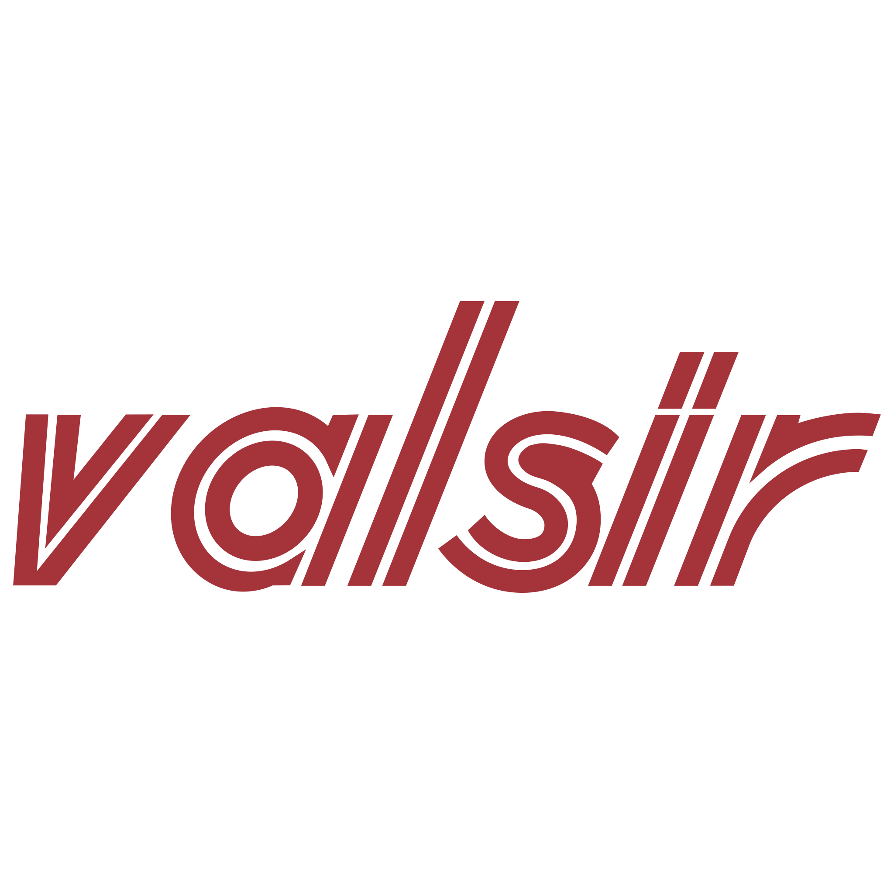

Vaillant
Marchio centrale per riscaldamento e pompe di calore, con forte rilevanza commerciale per le soluzioni che vuoi spingere di più nel nuovo sito.
Apri sezione VaillantShowroom a Roma · Centocelle
Termoidraulica Lauri si presenta come punto di riferimento a Roma per chi sta ristrutturando, costruendo o aggiornando impianti e ambienti bagno. Il sito nuovo mette insieme showroom, reparto tecnico, marchi riconoscibili e un linguaggio più chiaro, più forte e più adatto a trasformare l’interesse in contatto reale.
Marchi in evidenza
La home ora lavora di più sul colpo d’occhio: marchi più leggibili, loghi più forti e collegamenti chiari alle sezioni più importanti del sito.
Marchio centrale per riscaldamento e pompe di calore, con forte rilevanza commerciale per le soluzioni che vuoi spingere di più nel nuovo sito.
Apri sezione VaillantUna presenza più pulita e più autorevole per la climatizzazione, con focus sui modelli principali e sulla gamma residenziale più interessante.
Apri sezione DaikinAttrezzature professionali, strumenti da lavoro e un messaggio più forte verso installatori e professionisti che cercano continuità operativa.
Apri sezione REMS
ImpiantisticaImpiantistica, scarichi, adduzione e componentistica tecnica per dare più forza alla parte professionale e al reparto tecnico del sito.
Apri sezione impiantisticaPercorsi principali
Ogni percorso parla a un pubblico preciso, con una pagina dedicata e un messaggio più chiaro.
Scelta di sanitari, mobili, rubinetteria, box doccia, piatti doccia, rivestimenti e supporto nella composizione dell’ambiente.
Vai alla pagina arredo bagnoMateriale tecnico, componenti, accessori e ricambi con un approccio pratico, ordinato e orientato alla soluzione.
Vai alla pagina termoidraulicaUna pagina pensata per artigiani, installatori e studi che hanno bisogno di rapidità, disponibilità e interlocutore serio.
Vai alla pagina professionistiImmagini del progetto
Ho mantenuto anche una parte visiva più ampia per evitare l’effetto pagina troppo testuale e dare al sito un impatto più ricco già in questa fase.
 Showroom bagno
Showroom bagno
Una base visiva già utile per presentare lo showroom come luogo di confronto, scelta e ispirazione per il cliente privato.
 Termoidraulica e impiantistica
Termoidraulica e impiantistica
Questa fascia rafforza subito il lato tecnico dell’azienda e rende più credibile la proposta anche verso professionisti e installatori.
Contatti
Questa sezione ora accompagna meglio l’utente verso il contatto reale, con invito alla telefonata, email e collegamenti social già presenti.